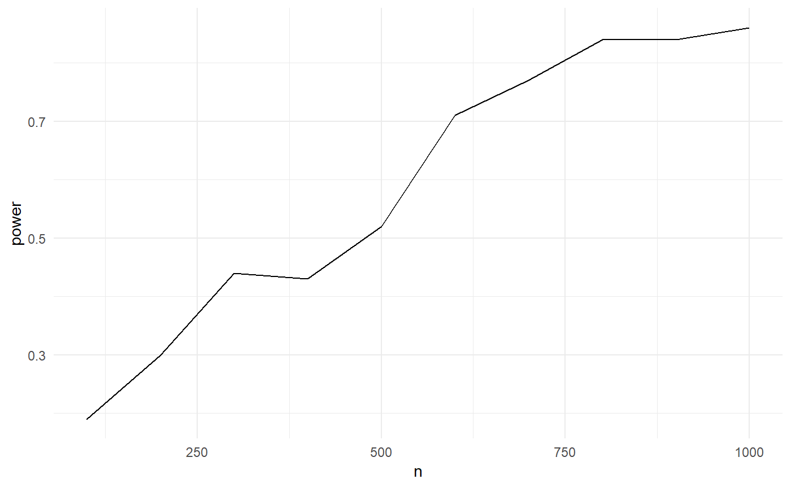

A package to explore and document your degrees of freedom
This experimental in-development package provides a set of functions to develop data analysis code that systematically documents researcher degrees of freedom when conducting analyses on observational data. The resulting code base is self-documenting, supports unit testing and power simulations based on simulated data. The documented researcher degrees of freedom can be exhausted to generate a distribution of outcome estimates.
To provide a quick tour we will construct a research design where an independent variable x is confounded by a co-variate z and where the only real researcher degree of freedom is whether to control for z in the regression setup. We will ignore the testing bit in this quick walk-through.
Step 1: Open a new Rstudio project in a clean directory and install the rdfanalysis package
devtools:intall_github("joachim-gassen/rdfanalysis")
library(rdfanalysis)Step 2: Write a function that simulates data
sim_data <- function(n, effect_size) {
z <- rnorm(n)
x <- rnorm(n) + z
y <- effect_size*x + z + rnorm(n)
data.frame(x = x, y = y, z = z)
}Step 3: Define your research design by a series of functions
Each research design consists of a series of steps. Each step becomes a function. To initialize these functions, you can use the call define_design(). It creates a code directory in your current working directory and produces template code for each step. In this case, our design will have only one step.
design <- define_design("est_model")Step 4: Develop your code for each step
Edit the resulting template file est_model.R in the code directory until it looks like the code below.
est_model <- function(input = NULL, choice = NULL) {
step_description <- c(
"## Estimate model",
"### Content",
"",
"This step estimates on OLS model based on simulated data."
)
choice_description <- c(
"### Choice",
"",
"A character value `control_for_z` that may take one of the following values:",
"",
"- `yes`: control for z",
"- `no`: do not control for z"
)
choice_type <- list(
list(name = "control_for_z",
type = "character",
valid_values = c("yes", "no"))
)
if (is.null(choice)) return(list(
step_description = step_description,
choice_description = choice_description,
choice_type = choice_type
)) else check_choice(choice, choice_type)
# ___ Analysis code starts below ___
if(choice[[1]] == "yes")
mod <- lm(y ~ x + z, data = input)
else mod <- lm(y ~ x, data = input)
return(list(
data = list(
est = summary(mod)$coefficient[2,1],
lb = confint(mod)[2,1],
ub = confint(mod)[2,2]
),
protocol = list(choice)
))
} Step 5: Source your code
source_design(design)Step 6: Test your code
test_design(design, input = sim_data(100, 0.1), reporter = "minimal")## ........................Step 7: Document your design
The below serves documentation purposes. The function prepare_design_documentation() generates a PDF file in your project directory that documents your code.
prepare_design_documentation(design, output_file = "my_design.pdf")prepare_design_flow_chart() produces a quick visual of the code flow.
prepare_design_flow_chart(design, landscape = TRUE)Step 8: Run a single protocol of choices
sim_data(100, 0.1) %>%
est_model("yes")## $data
## $data$est
## [1] 0.2506496
##
## $data$lb
## [1] 0.03860576
##
## $data$ub
## [1] 0.4626934
##
##
## $protocol
## $protocol[[1]]
## [1] "yes"Step 9: Assess the power of your analysis for a certain protocol
power_df <- simulate_design_power(design, protocol = list("yes"),
input_sim_func = sim_data,
range_n = seq(100, 1000, 100),
effect_size = 0.1)
library(tidyverse)
power_df %>%
group_by(n) %>%
summarise(power = sum(lb > 0)/n()) %>%
ggplot(aes(x = n, y = power)) +
geom_line() +
theme_minimal()
Step 10: Exhaust your researcher degrees of freedom
df <- exhaust_design(design, sim_data(1000, 0.1)) kable(df)| control_for_z | est | lb | ub |
|---|---|---|---|
| yes | 0.1118323 | 0.0499461 | 0.1737184 |
| no | 0.6078597 | 0.5550079 | 0.6607114 |
Only two researcher degrees of freedom in this setting but you will easily get into the thousands in a real research setting. Stay tuned for a vignette that presents a use case.